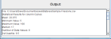

The Statsres Output Screen displays statistical results by file and column heading. The file is listed first and then the column which the results relate to. In the case of multiple files, the results for each column heading are shown before moving on to the next file. For each statistical measurement selected, the name of that measurement is shown as well as the result for that measurement. These are given to several decimal places where appropriate (i.e. where the result did contain a fraction). Statsres does not round up or round down any results!